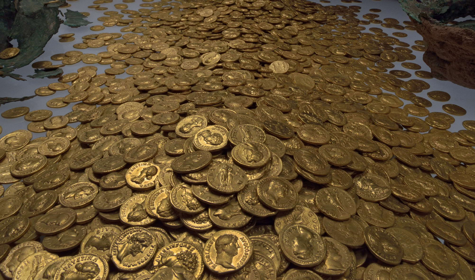

Rules of Trader's International
Winning Conditions
Winning Conditions

The winner of Trader's International is determined by who has amassed the most wealth when the game finishes. Games can run from 10 to 50 in-game years, depending on how long you'd like the game to run.
Resources
Trader's International has a variety of resources to trade with, ranging from sugar and spices to precious gemstones. Each resource has a monetary value and can be used for different purposes. Gemstones have the highest value, but are useless outside of that. Wood is needed to build more ships and caravans, while sugar and grain is used to feed your empire.
Playable Countries
Trader's International has six playable countries to choose from: Great Britain, The Dutch Republic, The Ottoman Empire, The Oyo Empire, The Mughal Empire, and The Qing Dynasty. Each country has adavantages and disadvantages. For example: Britain has the largest and most powerful navy, but has little influence on inland trade, while the Ottoman Empire has a great deal of influence because of its location, but lack resources to trade with.
Created by Camden Harrison